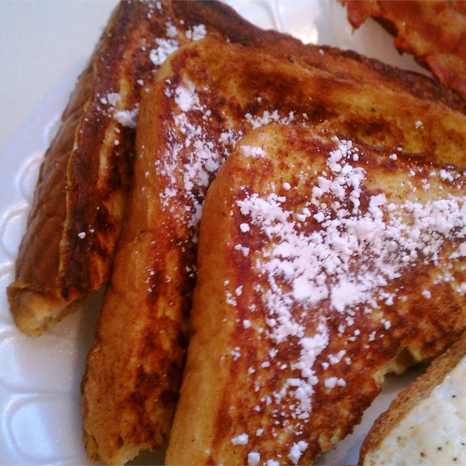

Original Recipe French Toast

Thick slices of sweet bread are the perfect base for French toast.
Ingredients:
- 4 (1 inch thick) slices King's Hawaiian Sweet Bread
- 4 large eggs
- 1/2 cup milk
- 1/2 teaspoon vanilla
- 1/4 teaspoon ground cinnamon
- 2 tablespoons butter or oil for frying
- 2 tablespoons maple syrup
Steps:
- Slice bread crosswise so that each slice is about 1-inch thick. Cut larger slices into halves or thirds, if desired. Set aside.
- In a shallow mixing bowl, whisk together the eggs, milk, vanilla and cinnamon.
- Quickly dip slices (do not soak) in egg mixture and cook until golden brown on both sides.
- Keep egg mixture stirred and spices well blended.
- Sprinkle with powdered sugar and serve with warm maple syrup.